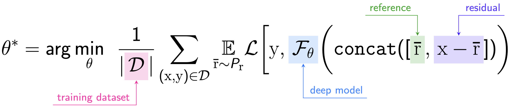
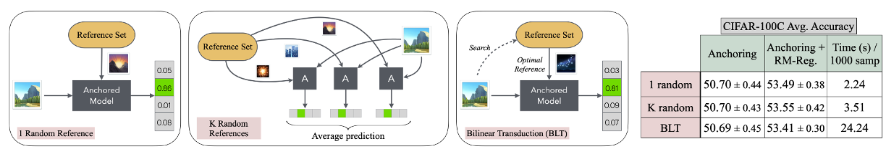
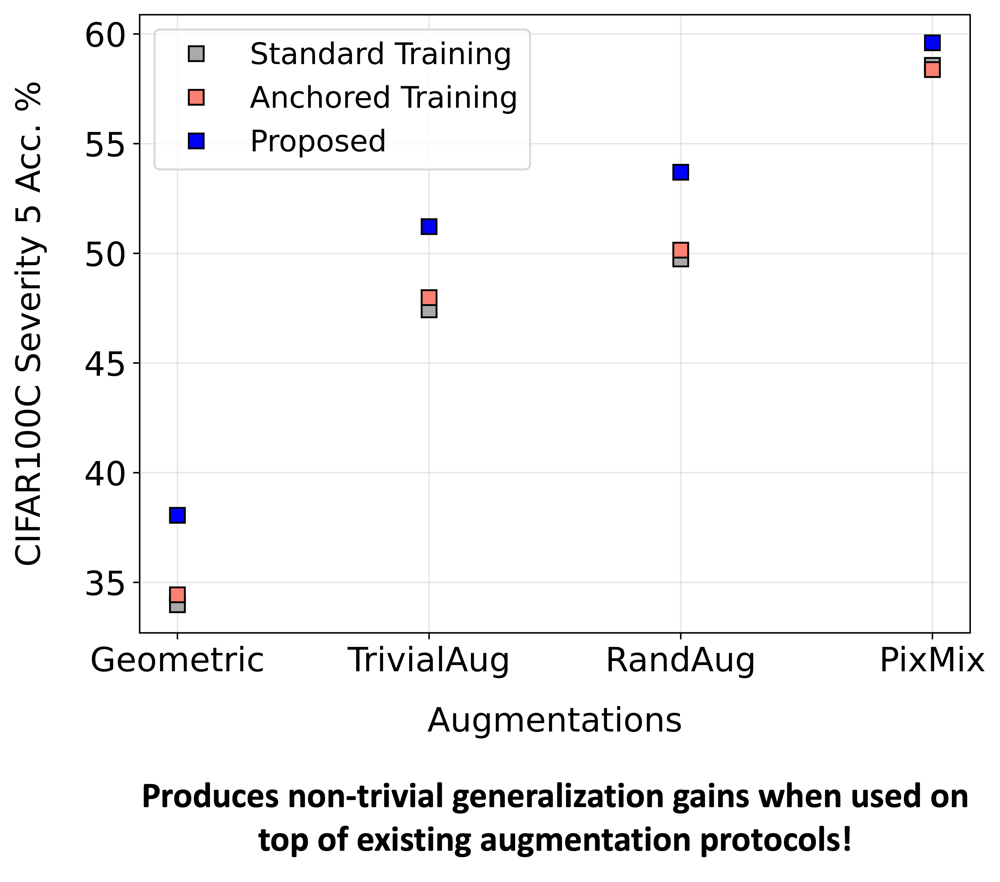
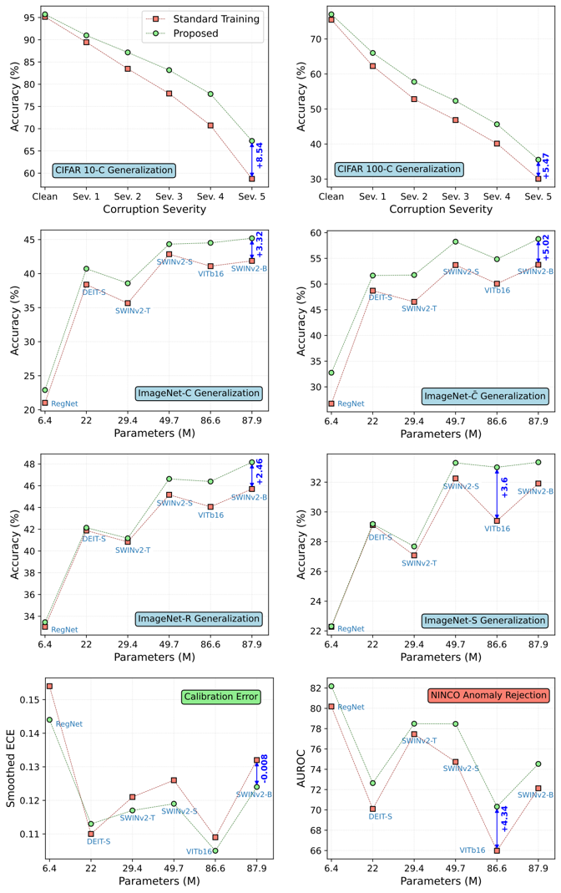

First of all, what is anchoring?
Anchoring is an architecture-agnostic training technique for deep neural networks. This is based on the principle of stochastic centering, which samples multiple functions using a single model by exploiting the neural tangent kernel's lack of shift invariance. Anchoring reparameterizes each input $\mathrm{x}$ into a tuple comprising a reference sample $\bar{\mathrm{r}}$ and the residual $\mathrm{d} = \mathrm{x}-\bar{\mathrm{r}}$, i.e., $[\bar{\mathrm{r}}, \mathrm{d}]$. The resulting tuple is fed as input to the network instead of the original input, by concatenating the tuple elements along the feature axis for vector-valued data or the channel axis for image data. This forces the neural network to model the joint distribution $P_{(\mathrm{r}, \Delta)}$ for predicting the target $\mathrm{y}$. Formally, the objective can be written as:

In effect, for a given \( \mathrm{x} \) and reference samples \( \bar{\mathrm{r}}_1, \dots, \bar{\mathrm{r}}_k \), anchoring ensures that \( \mathcal{F}_\theta([\bar{\mathrm{r}}_1, \mathrm{d}_1]) = \dots =\mathcal{F}_\theta([\bar{\mathrm{r}}_k,\mathrm{d}_k]) \). In other words, regardless of the choice of reference, the model must arrive at the same prediction for an input.
Why should we adopt anchoring?
Anchoring allows the network to learn a mapping between the joint space of (reference, residuals) and the targets, rather than the original input-target pairs. Through this reparameterization, anchoring creates different relative representations for a sample with respect to references drawn from $P_\mathrm{r}$, and attempts to marginalize the effect of the reference when making a prediction for that sample. As a result it implicitly explores wider hypotheses and leads to better generalizable solutions. This principle has been shown to produce models with improved calibration and extrapolation properties, and to facilitate accurate epistemic uncertainty estimation. Basically this behavior hinges on effectively leveraging the diversity of the reference-residual pairs and stably converging for the same protocols from standard training.
Does anchoring actually leverage the reference-residual diversity?
While anchored models operate in the joint space \( P_{(\mathrm{r}, \Delta)} \), the reference set \( \mathcal{R} \) from which the references are sampled from (\( \mathcal{R} \subseteq \mathcal{D} \)), controls the diversity of reference-residual combinations exposed during training. As the size and diversity of \( \mathcal{R} \) increase, anchoring is expected to explore a broader range of hypotheses and lead to improved generalization.
However, we find that although anchoring offers small but consistent improvements (0.5%-1%) over standard training, its benefits do not fully scale with increased reference set diversity as seen in the figure on the right (generalization on CIFAR10C/100C). This contrasts with prior research advocating for larger reference sets for maximal benefits. Short answer is NO!
Can changing the anchoring inference protocol result in any difference?

The literature showcases different protocols for performing inference with anchored models. Strategies such as reference marginalization, as proposed by Thiagarajan et al., utilize multiple references to compute an average prediction and estimate epistemic uncertainty. This process enhances robustness by considering diverse reference-residual combinations. In contrast, Netanyahu et al. introduced the bilinear transduction (BLT) method, which focuses on finding optimal references for extrapolation in regression tasks, especially for unseen data. However, a systematic evaluation of these methods on CIFAR100C shows that while inference protocols vary in complexity, their overall impact on accuracy remains similar. So what is missing? We need to focus on better training anchored models to leverage their properties!
Anchoring v2.0 - Improving Anchored Training via Reference Masking Regularization

A close examination of anchored training reveals a critical limitation. When the reference set, \(\mathcal{R}\), equals the dataset, \(\mathcal{D}\), the number of reference-residual pairs grow combinatorially and becomes impractical to explore fully within a fixed number of training iterations. This results in insufficient sampling of the distribution \(P_{(\mathrm{r},\Delta)}\), which can lead to models making predictions based solely on residuals rather than considering references.
To address this, we propose a novel regularization strategy termed Reference Masking Regularization to improve anchored training. This method involves zeroing out the reference while maintaining the residual fixed, allowing the model to process tuples in a way that discourages meaningful predictions when the reference is masked. It is done so by mapping these masked tuples to high-entropy predictions (uniform probabilities). We control this regularization via a user-defined masking probability ( \alpha ) which is chosen based on the convergence properties of anchored training. Our approach significantly enhances generalization accuracy, particularly with larger reference sets, without compromising inference efficiency, as demonstrated by our experimental results. The figure above depicts the conceptual diagram of our approach along with a simple pseudo-code.
A Deep Dive Into Our Anchored Models Reveals Interesting Properties!



How well does Anchoring v2.0 work in practice?

We make a number of interesting findings about Anchoring v2.0:
- How does the generalization, calibration and anomaly rejection properties look like? Across datasets of varying scale (e.g., CIFAR $\rightarrow$ ImageNet) and architectures (e.g., ResNets $\rightarrow$ SWIN), our protocol
achieves consistent improvement in performance in all the three fronts. We make an interesting observation that the magnitude of relative increase from the baseline increases with increase in the parameter complexity of the architecture. Anchoring achieves
all this without any additional bells and whistles.
- Does anchored training compromise performance? No! It is a general
protocol applicable to any architecture and typically leads
to improved generalization, particularly under distribution
shifts.
- Do the benefits remain when we adapt anchored models by training linear probes? Yes! We train linear probes on top of our pre-trained anchored transformers and evaluate them under two scenarios
(i) ID Eval: Here, both the training and test datasets originate from the same distribution (e.g., Train and Test on DomainNet Photos) & (ii) OOD Eval: Here, the training and test datasets are distribution shifted (e.g., Train on DomainNet Photos, Test on
DomainNet Sketch). In both cases, we observe an average accuracy increase of ~2% indicating the efficacy of our anchored models in being improved feature extractors.
- Can anchoring be applied to other modalities? Yes! Anchoring is data and architecture agnostic and can be used to train on graphs, text, audio, time series using a suitable optimization protocol.